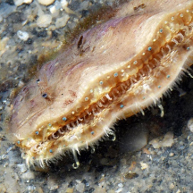
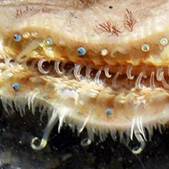

|
|
| bivalves text index | photo index |
| Phylum Mollusca > Class Bivalvia > Family Pectinidae |
| Large
scallop awaiting identification* Family Pectinidae updated May 2020 Where seen? These large clams are sometimes seen on our Southern shores near living reefs. Features: Diameter 6-10cm. A circular two-part shell, thick and heavy, yellowish, often covered in sediments. When submerged, a fringe of tentacles emerge, some long and many short tentacles, with many tiny, well developed eyes along the mantle edge. Clap back clam: It can 'swim' backwards with claps of its shell. |
 Labrador, Jun 08  'Swimming' backwards with clap of shell. |
 Tanah Merah Ferry Terminal, Jun 15  When submerged, tentacles and tiny eyes can be seen. Photo shared by Loh Kok Sheng on facebook. |
*Species are difficult to positively identify without close examination.
On this website, they are grouped by external features for convenience of display.
| Large scallops on Singapore shores |
On wildsingapore
flickr
|
| Other sightings on Singapore shores |